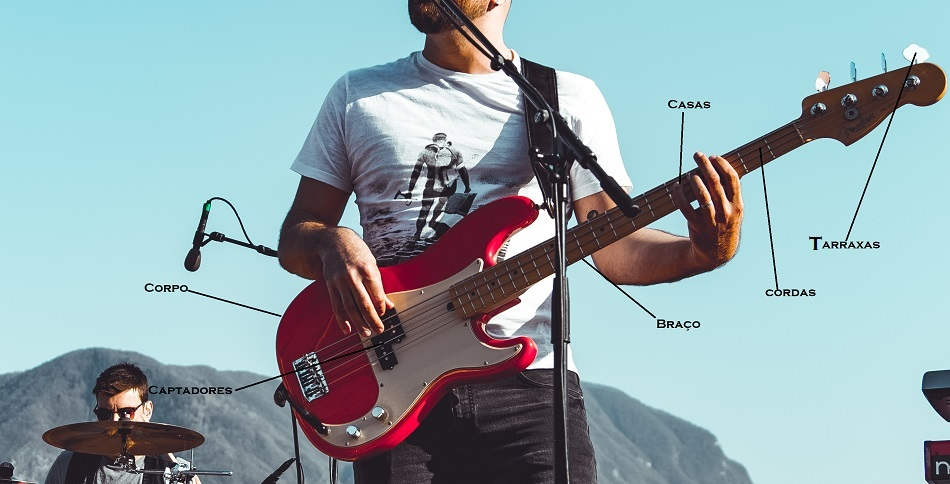

- Home
- >
- Conteúdo
- >
- Baixo
Por que sua Guitarra tem quatro cordas?
Mais baixo por favor...
Não adianta, quem toca baixo sempre precisa explicar que o baixo não é uma guitarra. Apesar de ser tão elétrico quanto. Em sua essência mora cadência e a pulsação. É a conexão entre ritmo e harmonia.
Ele vai dar a Liga!
Muitas das vezes não é percebido pelos mais distraidos. Mas faz conexão entre todos os instrumentos e oferece os maravilhosos graves. Seu comprimento é maior que o da guitarra, podem ter quatro, cinco ou seis cordas. No entanto, utiliza-se mais o de 4 cordas. Não é comum utilizar palheta para tocar baixo, apesar que algumas pessoas utilizam, para aumentar a velocidade da música.Utilização dos dedos
Guarde a numeração abaixo ela vai ajudar ao tocar instrumento de corda.

←Voltar